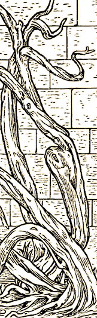

Putting on Your Pants One Leg at a Time
Okay, sounds easy, we all know how to do it. Of course, computers don’t. Most computers don’t have legs, fewer wear pants, and those that do, probably had to be told how to put them on. That’s where we find ourselves, having to worry about how to wear pants… for starters.
Our ultimate goal is to allow players to use all objects they find in any way they can conceive to use them. That includes wearing pants on your head and boots on your hands. It annoys us, but if you want to do it, we strive to let you.
On the surface, sure you can wear pants on your head, and boots on your hands. No problem, we’ll let you do it. Unfortunately, the computer has no idea that when you put pants over your head, you can no longer see, or that when you wear boots on your hands, you cannot pick anything else up. And frankly, worn this way, these articles are not really considered worn clothes. Indeed, the description, “Maurice is wearing trousers on his head,” is likely the first, and maybe only thing you notice about him on a short description. Of course, Maurice could as easily wear a bucket or a lampshade on his head and get the same effect. So, in effect, clothing not worn on the intended location becomes an ordinary object. Anything not intended to be worn on the head will probably obscure vision, while anything not intended to be worn on the hands will probably make manipulation difficult. That’s settled.
But what about other clothing? Why can’t I wear a sweater over a shirt?
You can.
Why can’t I wear thirty sweaters over a shirt?
Stop that! Because… because… well we all know why, but…
Here’s where the mechanics [we’re considering – and will eventually implement] come in.
It’s because the material has to have a thickness [how much area does it displace], and an inner and outer radius [how much can be worn under it, and over it], and flexibility [how much it compresses, how much it can stretch]; finally, we also have insulation [usually referring to how hot you get wearing an article of clothing]. Here are some sample numbers:
Sweater: Thickness = 1; Inner/Outer Radius = 12.5/13; Flexibility = .5 to 1.5; Insulation = 2
Player’s radius at largest point [around chest for this example] = 12
You put on the sweater; it’s a radius 12.5/13, just a little loose, comfortable.
You put on another, identical sweater, it’s radius is also 13, the first sweater compresses to 12.5 because it’s flexible enough to compress a little. It’s getting snug [since skin tight for you is at 12], but you are not yet uncomfortable. The outer sweater stretches a little since it’s thickness 1, to be a radius 13.5. You are now up to Insulation 4, and in an average environment, warm.
Okay. You put on another, identical sweater. This one compresses the outer sweater you’re wearing, that sweater, drops to Radius 13, the one underneath it gets very snug, against your body, compressed to 12., as close as it can get. And the outer sweater stretches over the 13 radius sweater, and sits, uncompressed, but stretched to an outer radius 14, because of its thickness of 1. You are now uncomfortable and getting quite warm with an insulation of 6.
Thinking back fondly of your college days, when you successfully stuffed eleven people into a phone booth, you don, yet another sweater.
Again the outermost sweater compresses a little to 13.5, and the sweater stretches 1 radium to be 13.5 on the inside, and 14.5 on the outside. You are mighty warm [at insulation 8], and uncomfortable, and can only wave your arms around enough to get one more sweater over your head.
…which the designers say is your last sweater, because the maximum the sweater can stretch is 1.5 [that’s 14 radius on the inside of the sweater], and the most your outer sweater can compress to is .5 radius. You’ve had enough; at five sweaters, its time to cut you off.
We think about this stuff, here at Skotos, so you don’t have to. And nope, you will never see all these numbers when you are playing, you just won’t be able to put that tiny sock over your boot. And now you know why. |
|